shell脚本开发之文本操作
系列学完了，这是第二期。(其实应该这个先学的) bash 基础
接下来是有名的第三方工具 (正则表达式 awk sed grep等等)
bash 快捷键
| 快捷键 | 英文 | 功能 |
|---|---|---|
| Ctrl + A | ahead | 行首 |
| Ctrl + E | end | 行尾 |
| Ctrl + U | 删除光标之前的 所有 字符 |
|
| Ctrl + K | 删除光标之后的 所有 字符 |
|
| Ctrl + L | clear | 清空屏幕 |
| Tab | 补全 $PATH 命令，补全文件名 |
RegExp
正则表达式分两类：
- 基本正则表达式，BRE对应的字符有：
^$.[]* - 扩展正则表达式，ERE在BRE基础上，加上：
(){}?+|等字符
正则表达式仅支持 (sed, awk, grep)
| 工具 | 描述 |
|---|---|
| grep | 文本过滤工具 (模式 pattern) 工具 |
| sed | 流编辑器 (stream editor) 文本编辑工具 |
| awk | Linux 文本报告生成器 (格式化文本) gawk |
BRE 集合
| 字符 | 描述 |
|---|---|
| ^ | 尖角号，用于模式的最左侧 --> "^yu" 匹配以 yu 单词开头的行 |
| $ | 美元符，用于模式的最右侧 --> "yu$" 匹配以 yu 单词结尾的行 |
| ^$ | 组合符，表示空行( ^ 后面什么也没写，为空。$ 前面什么也没写，为空。开头结尾什么都没有) |
| . | 匹配任意一个且只有一个字符，不能匹配空行 |
| \ | 转义字符，让特殊含义的字符，现出圆形，还原本意。例如 \. 代表小数点 |
| * | 匹配前一个字符（连续出现）0次或1次以上，重复0次代表空，即匹配所有内容 --> a* 匹配 a 0次或多次 |
| .* | 组合符，匹配所有内容 |
| ^.* | 组合符，匹配任意多个字符开头的内容 |
| .*$ | 组合符，匹配以任意多个字符结尾的内容 |
| [abc] | 匹配 [] 集合内的任意一个字符，a 或 b 或 c，可以写成 [a-c] |
| [^abc] | 匹配除了 ^ 后面的任意字符，a 或 b 或 c，^ 表示对 [abc] 的取反 |
ERE 集合
- grep 命令需要使用参数
-E才生效 - egrep 不推荐使用，用
grep -E替代 - grep 不加参数，得在特殊字符前面加
\反斜杠，识别为正则
| 字符 | 描述 |
|---|---|
| + | 匹配前一个字符1次或多次，前面字符至少出现1次 |
| [:/]+ | 匹配括号内的 : 或者 / 字符1次或者多次 |
| ? | 匹配前一个字符0次或1次，前面字符可有可无 |
| | | 表示或者，同时过滤多个字符串 |
| () | 分组过滤，被括起来的内容表示一个整体 |
| a{n,m} | 匹配前一个字符最少n次，最多m次 |
| a{n,} | 匹配前一个字符最少n次 |
| a{n} | 匹配前一个字符正好n次 |
| a{,m} | 匹配前一个字符最多m次 |
grep
全拼：Global search REgular expression and Print out the line
作用：文本搜索工具，根据用户指定得模式（过滤条件）对目标文本逐行进行匹配检查，打印匹配到的行
模式：由正则表达式的元字符及文本字符所编写出的过滤条件
1 | 语法： |
grep命令是linux系统中最重要的命令之一，功能是从文本文件或管道数据流中筛选匹配的行和数据，如果再配合正则表达式，功能十分强大，是Linux运维人员必备的命令
| 参数选项 | 解释说明 |
|---|---|
| -v | 排除匹配结果 |
| -n | 显示匹配行与行号 |
| -i | 不区分大小写 |
| -c | 只统计匹配的行数 |
| -E | 使用egrep命令 |
| –color=auto | 为grep过滤结果添加颜色 |
| -w | 只匹配过滤的单词 |
| -o | 只输出匹配的内容 |
1 | cat /etc/passwd > pwd.txt |
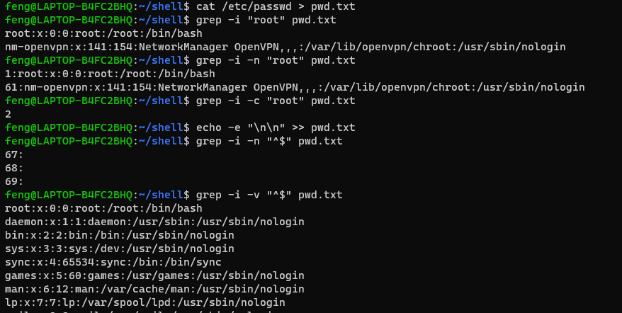
1 | grep -i "^s" pwd.txt |
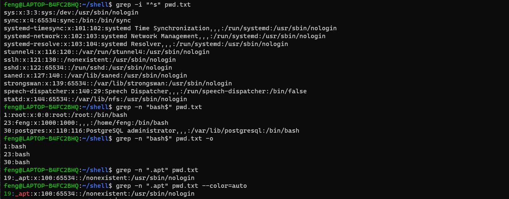
1 | grep "[a-z]" /etc/lsb-release |
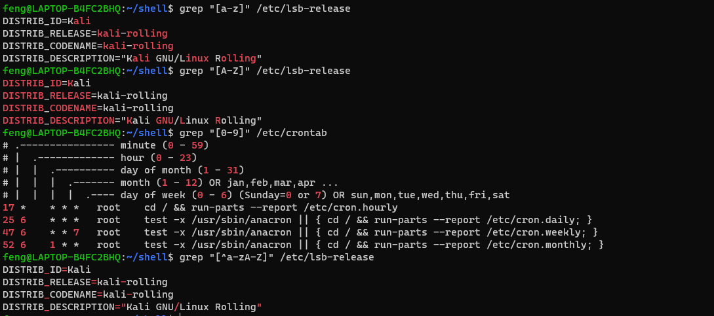
1 | grep -E "l+" /etc/lsb-release |
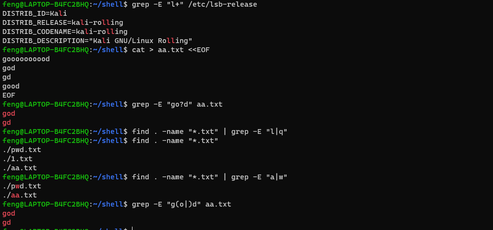
1 | grep -E "(r..t).*\1" /etc/passwd |
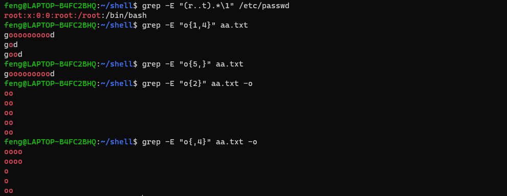
sed
对文件，数据流进行处理，操作，过滤替换转换文本内容。
工作流程：每次一行，放入模式空间(读入内存)，然后模式匹配，匹配成功，进行编辑，后输出屏幕，匹配失败输出屏幕。
1 | # 语法 |
选项：
| 参数选项 | 解释 |
|---|---|
| -n | 取消默认 sed 输出，常与 p 命令一起用 |
| -i | 直接将修改结果写入文件中，不加参数就是修改内存数据，输出 |
| -e | 多次编辑，不需要管道符了 |
| -r | 支持正则扩展 |
常用的内置命令字符
| sed 内置命令字符 | 解释 |
|---|---|
| a | append, 对文本追加，指定行后面添加一行/多行文本 |
| d | Delete, 删除匹配行 |
| i | insert, 表示插入文本，指定行前添加一行/多行文本 |
| p | Print, 打印匹配行内容，与 -n 一起使用 |
| s/exp/xxx/g | 匹配正则内容，然后替换内容(支持正则)，结尾 g 代表全局匹配 |
sed 匹配范围
| 范围 | 解释 |
|---|---|
| 空地址 | 全文处理 |
| 单地址 | 指定文件某一行 |
| /pattern/ | 被模式匹配的某一行 |
| 范围区间 | 10,20 十到二十行 10,+5 第十行向下5行。/pattern1/,/pattern2/ |
| 步长 | 1~2 1,3,5,7,9。2~2两个步长，表示2,4,6,8,10 偶数行 |
1 | # 忽略准备数据 |
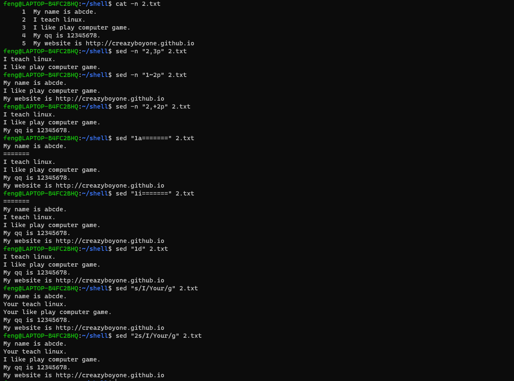
1 | sed -n "/linux/p" 2.txt |
1 | sed -i "2iMy qq is 123453453" 2.txt |
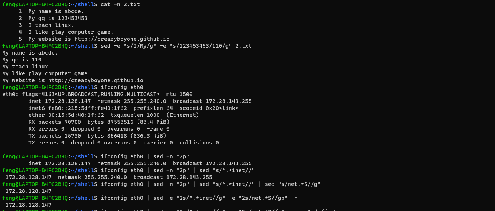
awk
有强大的文本格式化能力，处理成专业表格形式。awk最早是在 Unix 上实现。我们用的 awk 是 GUN awk 即 gawk。awk 更是一门编程语言，支持条件判断，数组，循环等功能。
1 | # 语法 |
- Action 指的是动作，awk擅长文本格式化，且输出格式化的结果，因此最常用的动作是
print和printf。
1 | for i in {1..10};do for j in {1..5};do echo -n "hello$((i*j)) " >> 3.txt;done && echo '' >> 3.txt;done; |
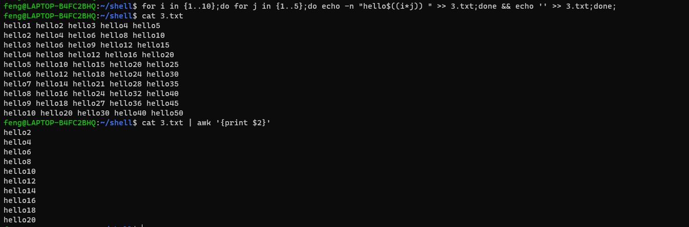
- 我们执行的命令是
awk '{print $2}'，并没有使用参数和模式，$2表示输出文本的第二列信息 - awk默认以空格为分隔符，且多个空格也识别为一个空格，作为分隔符
- awk是按行处理文件，一行处理完毕，处理下一行，根据用户指定的分隔符去工作，没有指定则默认空格
- 指定分隔符后，
awk把每一行切割后的数据对应到内置变量
1 | $0 表示整行 |
常用内置变量
| 内置变量 | 解释 |
|---|---|
| $n | 指定分隔符后，当前记录的第N个字段 |
| $0 | 完整的输入记录 |
| NF | (number of fiels) 分割后，当前行一共有多少个字段 |
| NR | (number of records) 当前记录数，行数 |
| FS | 输入分隔符，默认是空格 |
| OFS | 输出分隔符，默认是空格 |
| RS | 输入换行符，默认是换行符，指定输入的换行符 |
| ORS | 输出换行符，默认是换行符，指定输出的换行符 |
| FNR | 各文件分别计数的行号 |
| FILENAME | 当前文件名 |
| ARGC | 命令行参数的个数 |
| ARGV | 数组，保存的是命令行给定的参数 |
1 | awk '{print $0}' 3.txt |
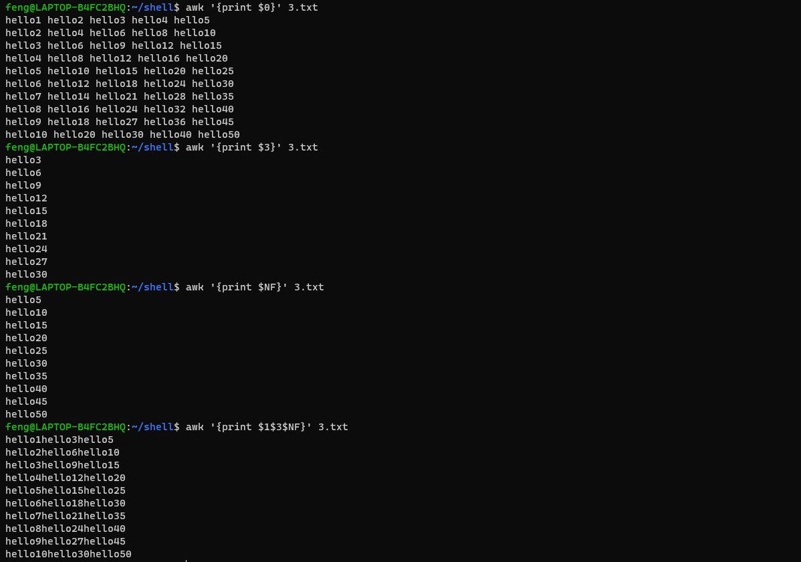
1 | awk '{print $1,$3,$NF}' 3.txt |
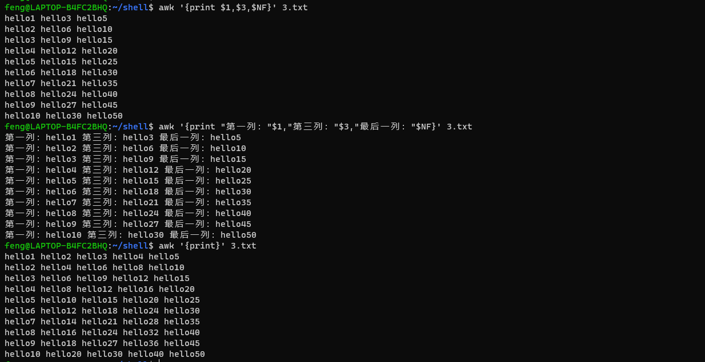
参数
| 参数 | 解释 |
|---|---|
| -F | 指定分割字符 |
| -v | 定义或修改一个 awk 内部变量 |
| -f | 从脚本文件中读取 awk 命令 |
1 | cat /etc/passwd -n | head -n 5 |
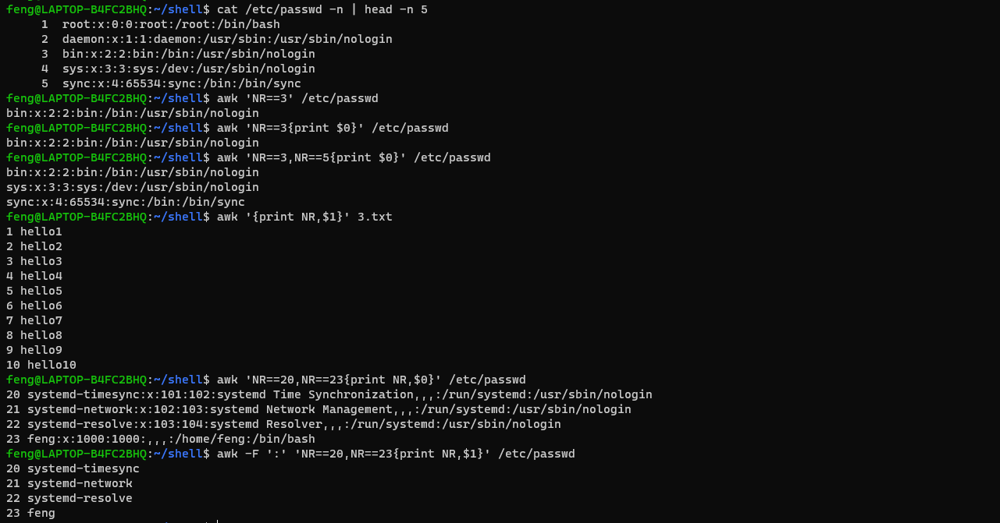
分隔符有两种
- 输入分隔符，默认空格。变量名是
FS(field separator) - 输出分隔符，
OFS(output field separator)
1 | awk -F ':' 'NR==1,NR==4{print $1}' /etc/passwd |
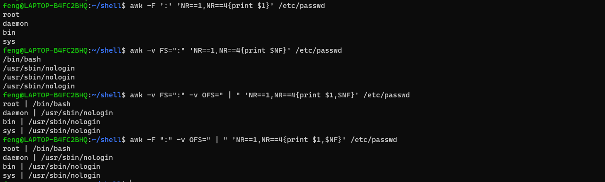
1 | awk '{print NR,FNR,$0}' 2.txt 3.txt |
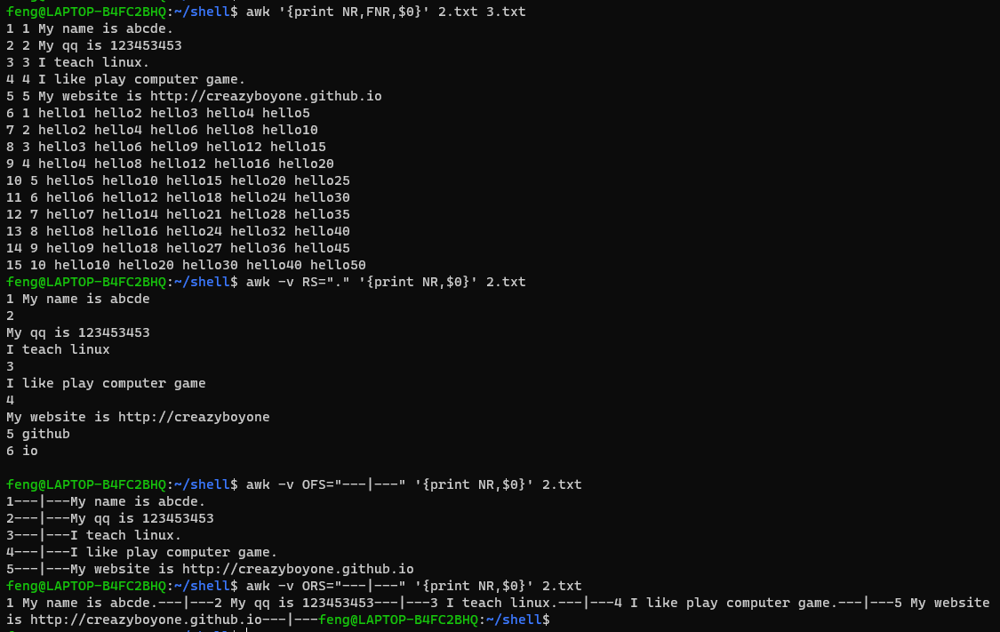
1 | awk '{print NR,FILENAME,$0}' 2.txt 3.txt |
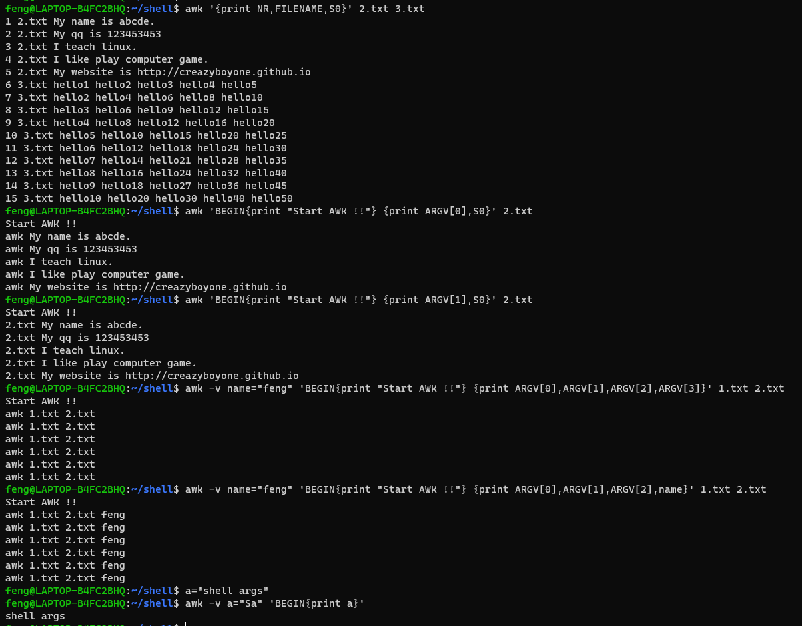
格式化输出
前面我们接触到的awk的输出功能，是print，只能对文本简单的输出，并不能美化或者修改格式
要点：
- 其中 print 命令的最大不同是，printf 需要指定 format
- format 用于指定后面的每个item的输出格式
- printf 语句不会自动打印换行符：
\n - format 格式的指示符都以%开头，后跟一个字符
| format | 解释 |
|---|---|
| %c | 显示字符的ASCII |
| %d %i | 十进制整数 |
| %e %E | 科学计数法显示数值 |
| %f | 显示浮点数 |
| %g %G | 以科学计数法的格式或浮点数的格式显示数值 |
| %s | 显示字符串 |
| %u | 无符号整数 |
| %% | 显示%自身 |
| - | 左对齐，默认右对齐 |
| + | 显示数值符号： printf "%+d" |
1 | awk '{print $0}' 2.txt |
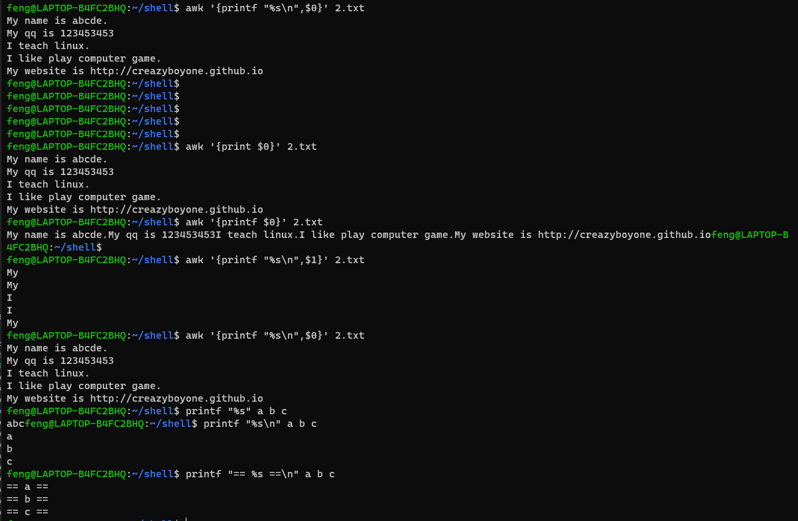
1 | awk 'NR==3,NR==5{printf "第一列：%s, 第二列：%s\n", $1,$2}' 3.txt |
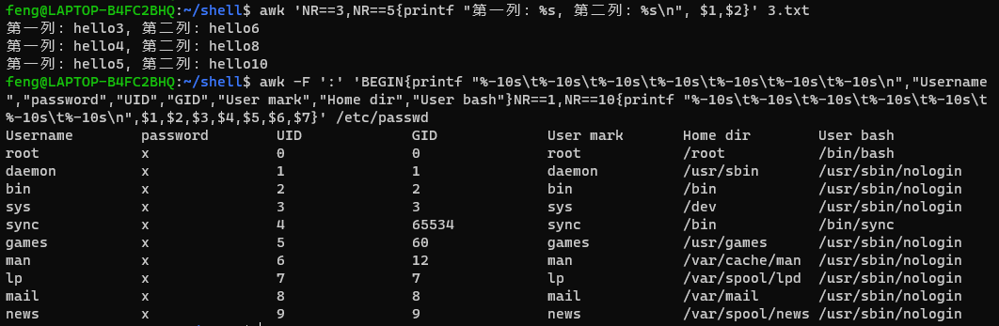
模式：
awk 是按行处理文本，刚才讲解了 print 动作，现在讲解特殊的 pattern :
BEGIN 和 END
- BEGIN模式是处理文本之前需要执行的操作
- END模式是处理完所有行之后执行的操作
awk默认是按行处理文本，如果不指定任何模式（条件），awk默认一行行处理
如果指定了模式，只有符合模式的才会被处理
| 关系运算符 | 解释 | 示例 |
|---|---|---|
| < | 小于 | x<y |
| <= | 小于等于 | x<=y |
| == | 等于 | x==y |
| != | 不等于 | x!=y |
| >= | 大于等于 | x>=y |
| > | 大于 | x>y |
| ~ | 匹配正则 | x~/正则/ |
| !~ | 不匹配正则 | x!~/正则/ |
1 | awk 'BEGIN{print "start awk"}NR==3{print "==",$0}END{print "Stop awk"}' 2.txt |
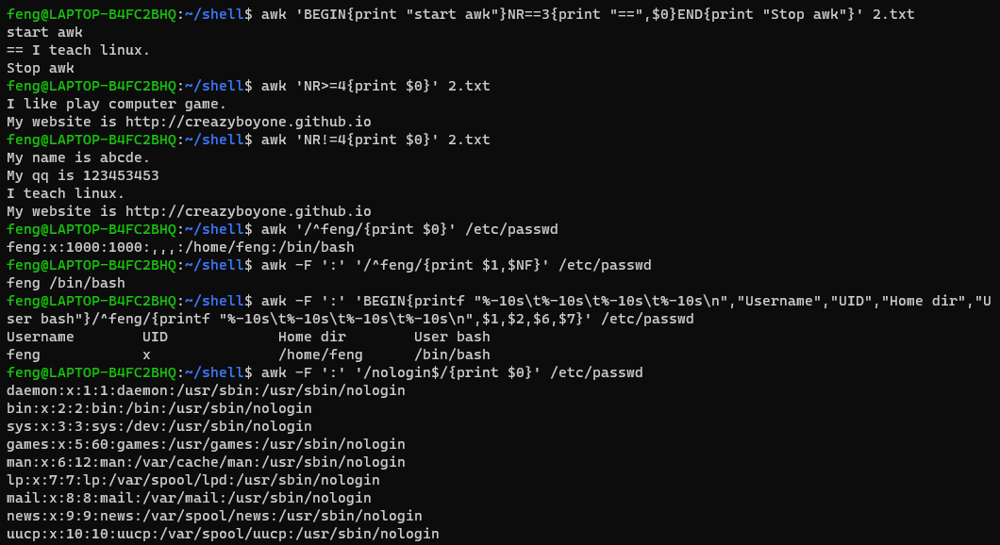
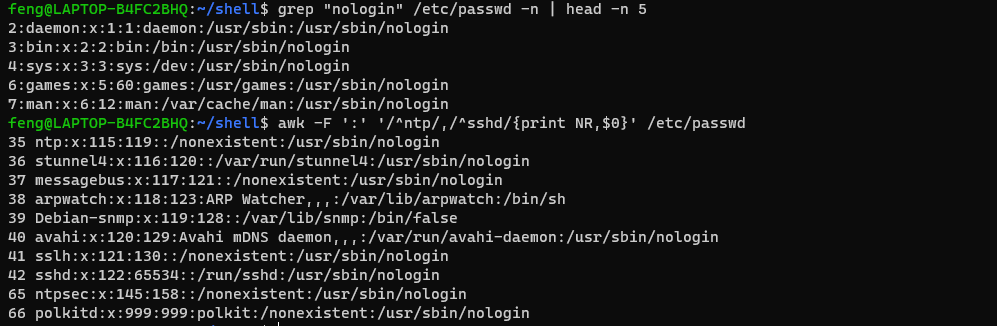